Koryo, Nara: things to do, food and stays
Koryo · Nara
Koryo
Highlighted on the Nara map.
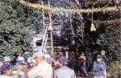
Stay
No bookable places to stay found in Koryo — nearest options in Yamatotakada.
Dining
手打ちそば はやし
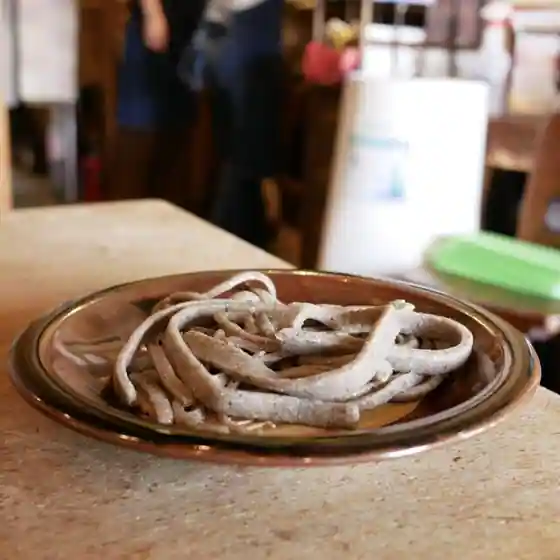
Teuchi Chisoba Hayashi
釜揚げうどん 鈴庵
Kama Age Udon Suzu Iori
やまざき屋
Yamazaki Ya
四川料理 金峰閣
Shisenryori Kinpo Kaku
麺100％
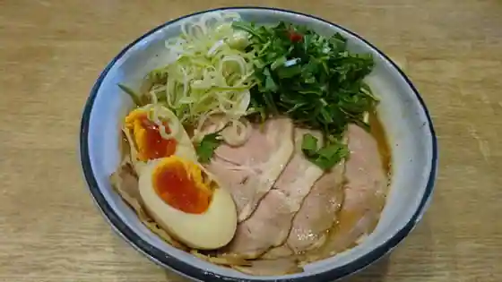
Men 100 %
いろり家
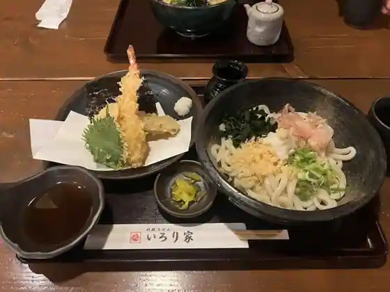
Irori Ie
樹苑 黒毛和牛専門店
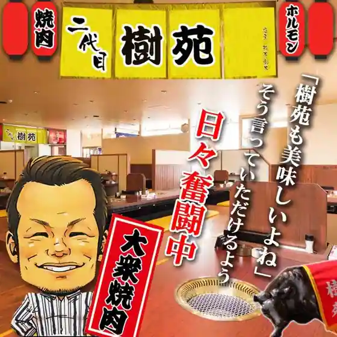
Ki En Kuroge Wagyu Senmon
ワイスバッハ
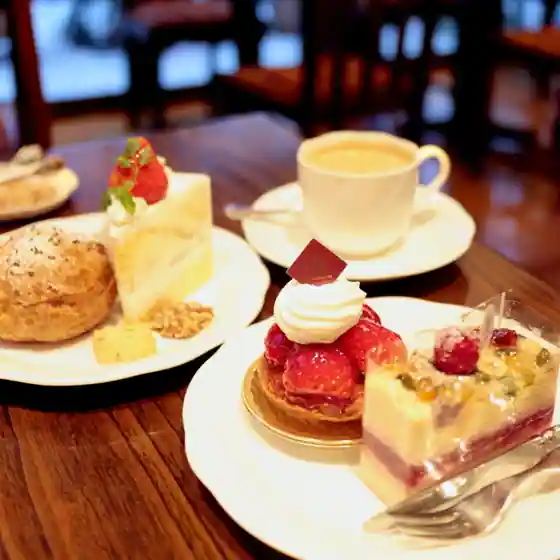
Waisubahha
海鮮中華料理 呑
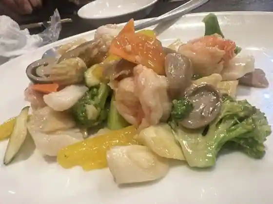
Kaisen Chukaryori Don
もっちりうどんと追い鰹 杵の音 真美ヶ丘店
Motchiriudonto Oi Katsuo Kine No Oto Mami Ke Oka
グラデボーレ・アルバ
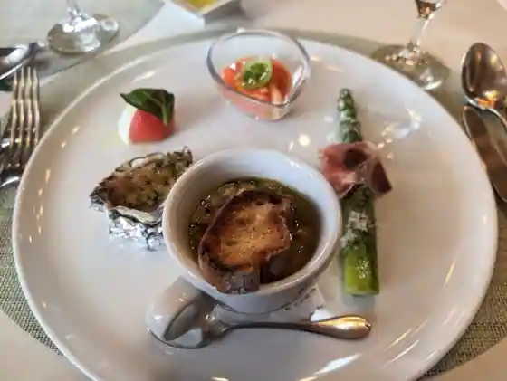
Guradebore Aruba
オランダ屋 高田店
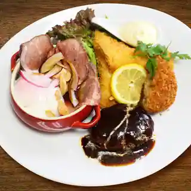
Oranda Ya Takada
Boulangerie briller
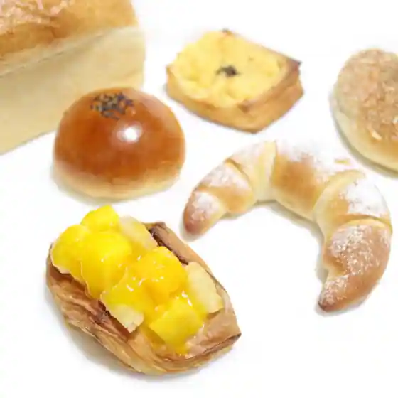
Boulangerie briller
神戸クック・ワールドビュッフェ 奈良広陵店
Kobe Kukku Warudobyuffe Nara Koryo
麺屋 幻海
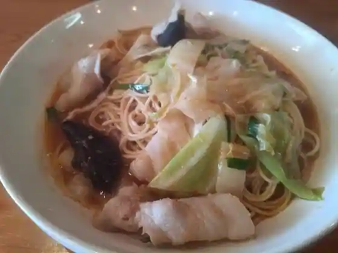
Men Ya Genkai
味のかけ橋 広陵店
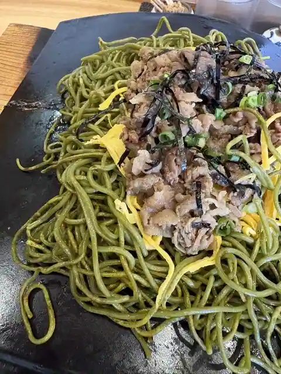
Aji Nokake Hashi Koryo
とんと亭
Tonto Tei
スペイン石窯パン グレコ
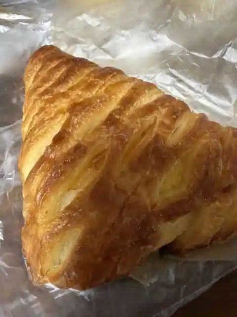
Supein Ishigama Bakery Gureko
炭火焼肉 食神 苑 広陵店
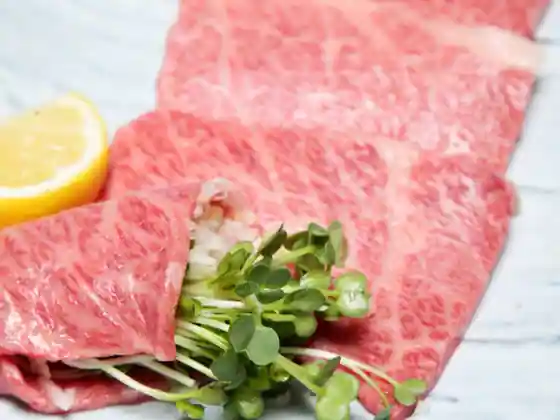
Sumibi Yakiniku Shokujin En Koryo
焼肉 神城
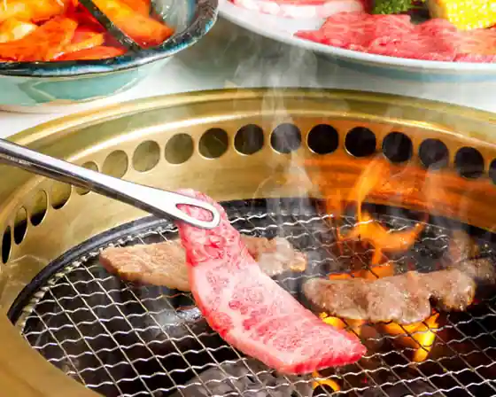
Yakiniku Kamijo
梅ぞの 真美ヶ丘店
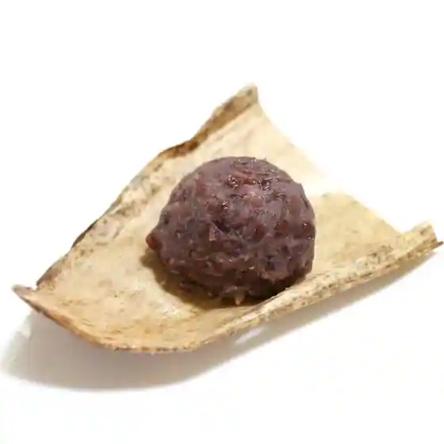
Ume Zono Mami Ke Oka
おはようこんにちはこんばんはたると
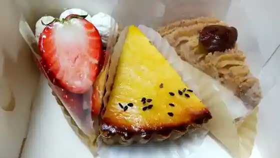
Ohayokonnichihakonbanhataruto
Pizzeria HARU
Pizzeria HARU
スマイル食堂。
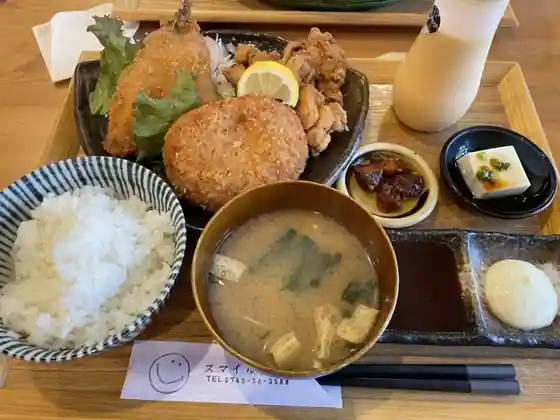
Sumairu Shokudo.
Sights
Ten Shrine (Koryo)
Sen Mitsudera
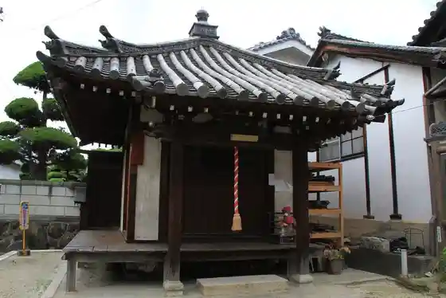
Taketori Park
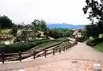